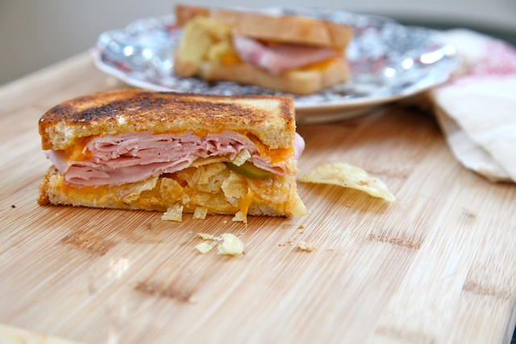

Ham Sandwich with Chips

Description
Also self explanatory, it's a ham sandwich but you put chips in the middle. Pickles too.
Ingredients
- Ham
- Bread
- Cheese
- Pickles
- Mayo
- Mustard
Steps
- Make a ham sandwich
- Put chips and pickles inside the sandwich
- Voila!